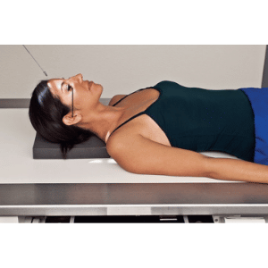
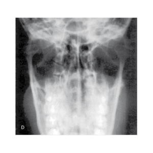
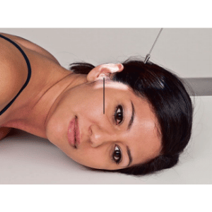
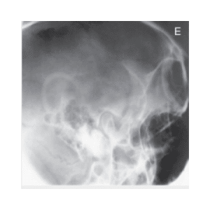
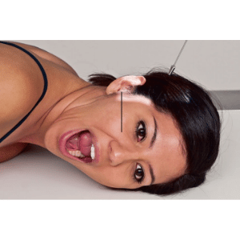
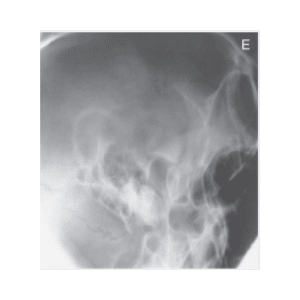

ATM - AXIAL / MÉTODO DE TOWNE
Paciente
Paciente em D.D., MMSS ao longo do corpo, MMII estendidos.
Chassis / Filme
18×24 transversal panorâmico.
Raio central
com ângulo de 35° caudal, orientado para frontal, passando pela ATM.
DFF
1,00 m – com bucky.


Observação: PMS ⊥ ao filme. LOM ⊥ ao filme.
ATM - PERFIL / método de SCHULLER
Paciente
Paciente em D.V. em posição de nadador. Crânio em perfil absoluto.
Chassis / Filme
18×24 – transversal ou 24×30 – em 4 partes.
Raio central
30º caudal, orientado para região parietal, ± 5cm acima e 2 cm anterior do MAE, emergindo na ATM mais próxima do filme.
DFF
1,00 m – com bucky.




Observação: PMS paralelo com o filme. LIOM paralela a borda superior do filme, LIP ⊥ a mesa. Incidência realizada com cilindro. Realizar incidência com a boca aberta e fechada.